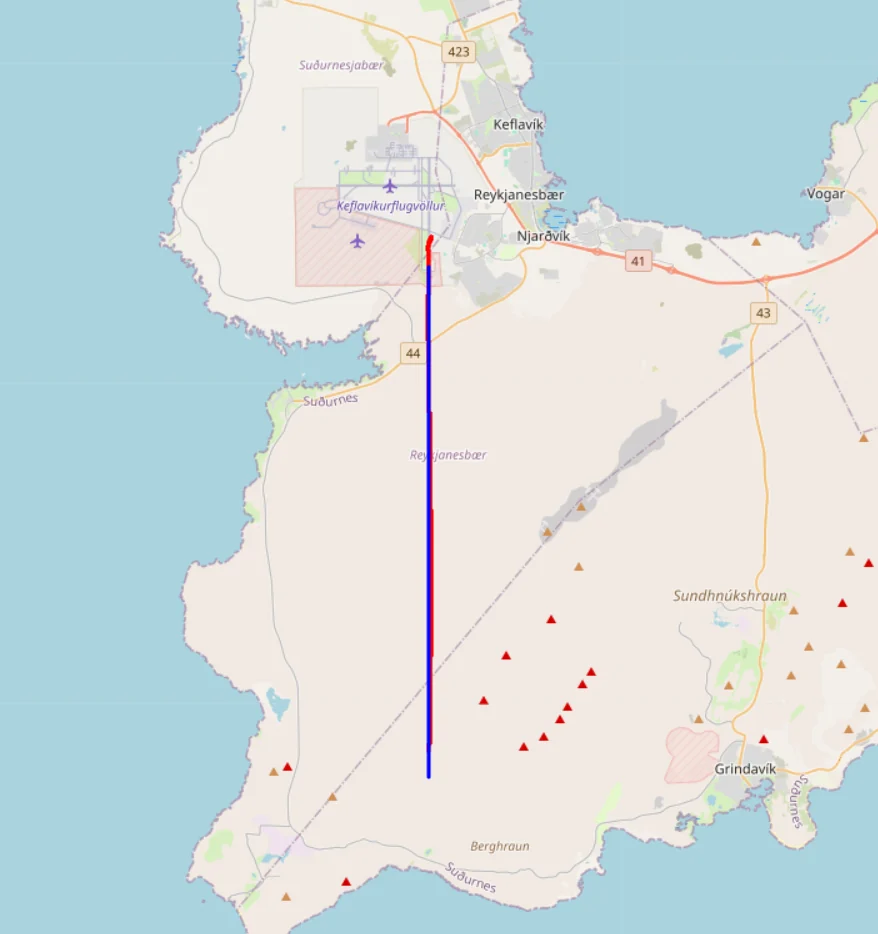
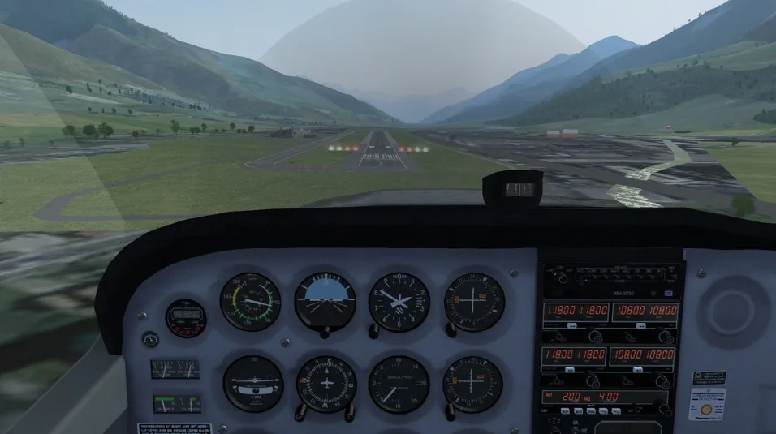
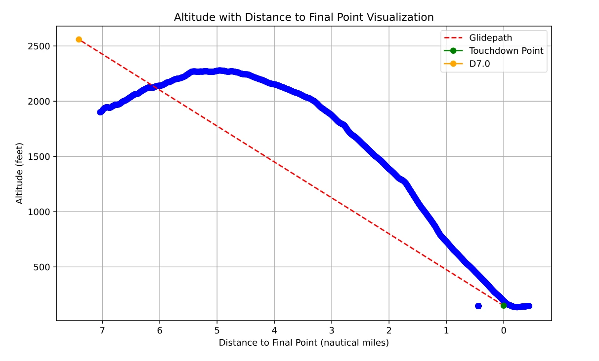
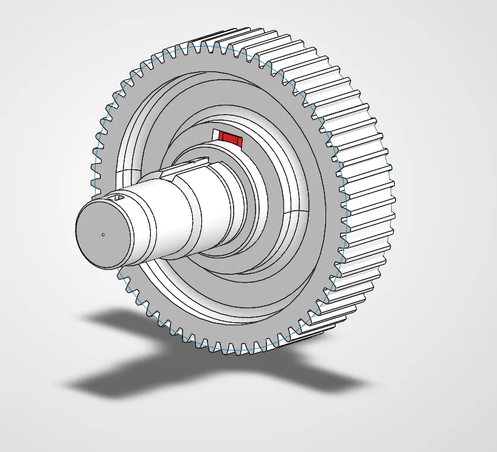
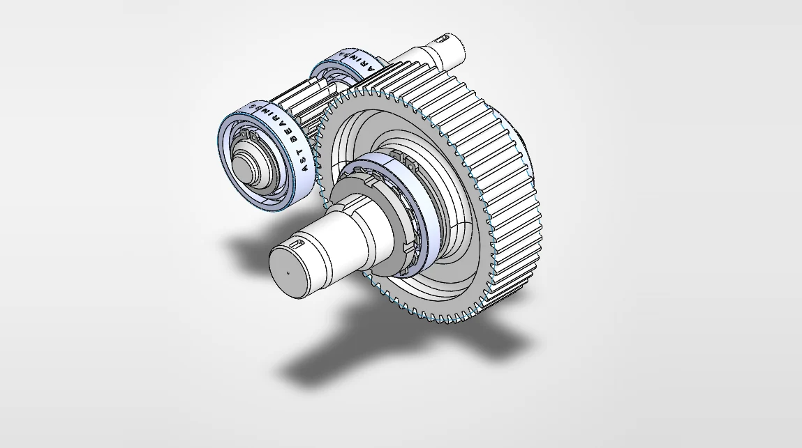
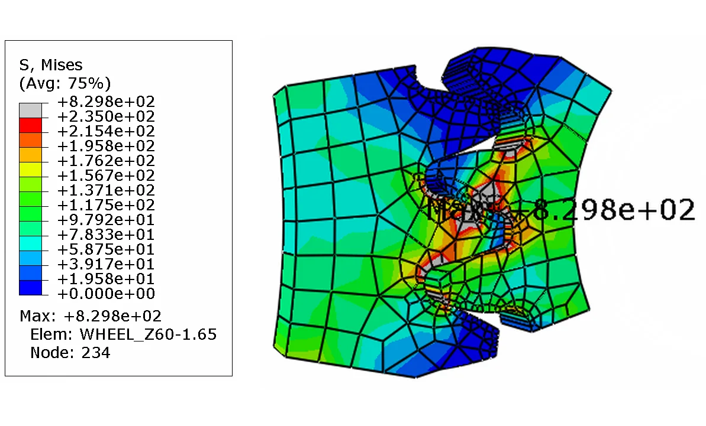

Realized Projects
Mechanics in Motion: From Design to Manufacturing
A mechanical can-press system designed as a first step toward recycling empty cans — featuring key mechanical linkages such as rail-slider and gear mechanisms. Initially developed through CAD design and later manufactured using both conventional and CNC machining processes, this project strengthened my understanding of core mechanical principles, one of the fundamental pillars of aerospace engineering. The project was carried out with the support of AFAMEC and its engineering team.





Realized Projects
Processing and Analysis of Simulated Flight Data
As part of a project at TU Braunschweig, we used the GPS data recorded during approaches to Keflavík in a Cessna 172P in FlightGear. We reconstructed the trajectories, mapped the GPS tracks and calculated the lateral and vertical deviations from the flight references. The descent profiles and statistical indicators, including the root mean square (RMS) error, allowed us to identify the phases where the deviations were largest.



Realized Projects
GearShock: Dynamic Study of a Spur Gear Reducer
GearShock is a CAD and finite element study of a single-stage spur gear reducer (ratio 3, module 2 mm) driving a belt conveyor. The gearbox was designed in SolidWorks and analysed dynamically in Abaqus; the model reproduces the analytical tooth force within 2.5 %. Steady running does not harm the teeth, but a sudden belt jam releases the motor’s kinetic energy into them within about a millisecond. The wheel teeth yield from about 150 rpm and break from about 220 rpm, far below the nominal 1,450 rpm, so a torque limiter on the output shaft is recommended.

Roadmap
An upcoming scientific review exploring the technical and commercial factors behind a legendary aircraft's downfall — a project aiming to analyze innovation, ambition, and lessons for future aerospace design.
If you'd like to participate in this project, contact me here.